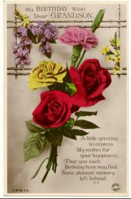
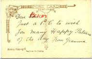
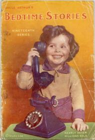
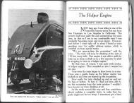

FRIDAY 31st JULY
7 today
I have had some birthday cards. They are from Mam and Dad, Clarice and Julia, and Granma Williams. Granma has written “Dear Son” which is what she calls Dad [not Clarence], so I have changed it with my red pencil.
|
|


|
...
SATURDAY 21st NOVEMBER 1942
I join the Cubs
I have joined the Cubs. I went with Barry Harvey on the 44 bus to Baker Street. The Scout hut is on the left hand side at the bottom near Warwick Road. It has big wooden doors across. Barry’s father is the Scout Master. They live up the road at 133 Circular Road.
|
SATURDAY 28th NOVEMBER
|
I went to the Cubs again. I am doing my tenderfoot.
|
SATURDAY 5th DECEMBER
St. George and the Woggle
Mr. Harvey has given me a neckerchief and a woggle. It is black with a gold edge and St. George and the dragon also in gold in one corner. I roll the neckerchief up so that there are two ends, with St. George and the dragon at the bottom. I hang the neckerchief round my neck so that they hang down in front. Then I tie the two ends together in a reef knot and pull the woggle up to my neck with St. George and the dragon showing at the back of my neck. Mammy has got me a green jersey and a cap and I wore them all tonight. I have learned the Cub Law and the Cub Promise, the animals and some knots. At the end we all squat in a circle with Mr. Harvey standing up in the middle, and we say “R K Lar, we’ll do our best.” Then Mr. Harvey says “Dib Dib Dib Dib” and we all stand up and salute and say “We’ll dob dob dob dob.”
| |
This arcane ceremony with its weird words was never explained to me, nor were Balloo the bear, Shere Khan the bullion tiger, and sundry animals with queer-sounding names. It eventually dawned on me that the animals were from Rudyard Kipling’s The Jungle Book, and that Akela was the leader of the wolf-cub pack. The Dib Dib Dib Dib bit was actually DYB DYB DYB DYB — shorthand for “Do Your Best” — and We’ll Dob Dob Dob Dob was simply “We’ll Do Our Best.”
|
|
SATURDAY 12th DECEMBER
|
I like to go upstairs at the cubs. The stairs are very rickety and the floor is on a slope. On the wall there is a coloured picture in a frame. It is of King George V’s coffin, with a man standing at each corner. Underneath is a poem. It says:—
The King is dead
And round his Royal head
Four courtiers mourn
His well beloved head.
— Rudyard Kipling.
It is very sad and makes me want to cry when I read it.
|
FRIDAY 25th DECEMBER
Bedtime Stories
For Christmas I have had Christ Our Saviour by E.G. White, and Uncle Arthur’s Bedtime Stories (19th Series) by Arthur S. Maxwell. This contains 23 stories and many drawings and lovely photographs including one of an L.N.E.R. train number 4482 Golden Eagle. I like trains.
| |
Both books are published by Stanborough Press Ltd., Watford, Hertfordshire, the U.K. publishing house of the Seventh-Day Adventist Church founded by Ellen G. White in 1846. The Christ Our Saviour book is a July 1931 printing, while the Bedtime Stories has only just been published, in November 1942. “War or no war [says the author], the children must have their Bedtime Stories … I have again followed the same pattern as I have these eighteen years since Bedtime Stories first were published … the grand total has now reached almost seven million copies.” My mother would have bought these books from a colporteur at the door. |
|
|

Bedtime Stories

The Helper Engine
|
Previous chapter || Next chapter ||
Index || Search
webwork by Jim Nagel at Abbey Press, Glastonbury — this edition published 2007-06-30
|
|